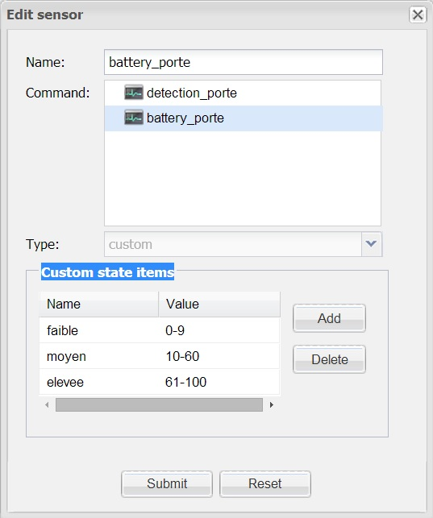

|
This page last changed on Apr 14, 2014 by pierre2302.
Hello
I have a small problem with the custom sensor. I would use value ranges , but I do not know how to define
If anyone can help me, thank you in advance!
Here is an example of what I've done does not work.
|
My understanding from the above configuration is that you would want the sensor to have a value of 'faible' when the value reported by your read command is anything between 0 and 9 inclusive, then same for 'moyen' and 'elevee'.
You can not achieve that with the custom sensor state mappings, which does not allow any logic but only simple 1 to 1 mapping.
I guess you could have entries like
'faible' : 0
'faible' : 1
...
'faible' : 9
'moyen' : 10
...
And that should work but is a lot of work.
Easier solutions is to use rules for that.
Have a sensor that is of type level and that just holds the 0 to 100 value.
Have a rule trigger by it, then in the rule write to logic to update a second sensor (linking to a virtual command), that holds the "translation".
Search the forums for more details on rules implementation, pretty sure your use case has already been covered or very close.

Posted by ebariaux at Apr 16, 2014 12:30
|
|
Thank you very much for your response. It works with the rules
Posted by pierre2302 at Apr 16, 2014 20:58
|
|
{kind=link}